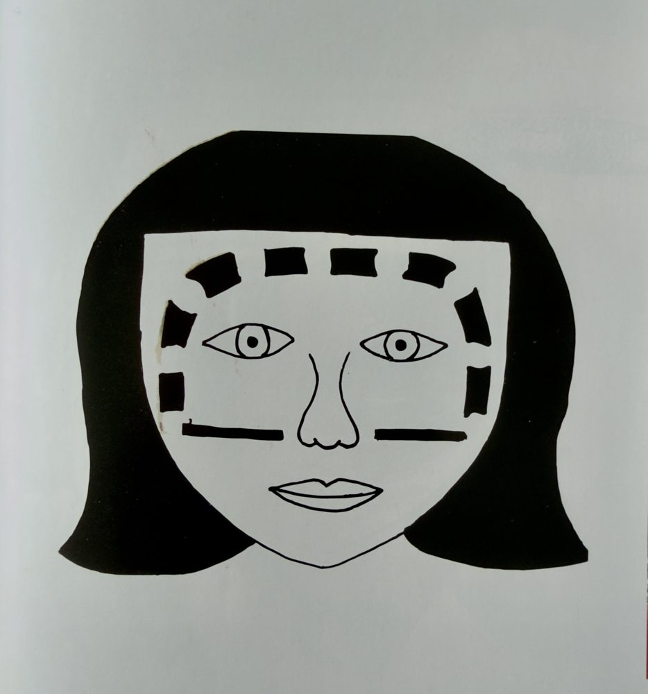
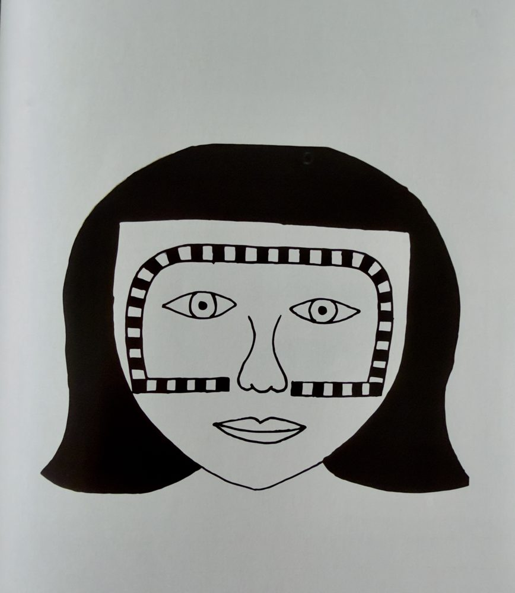
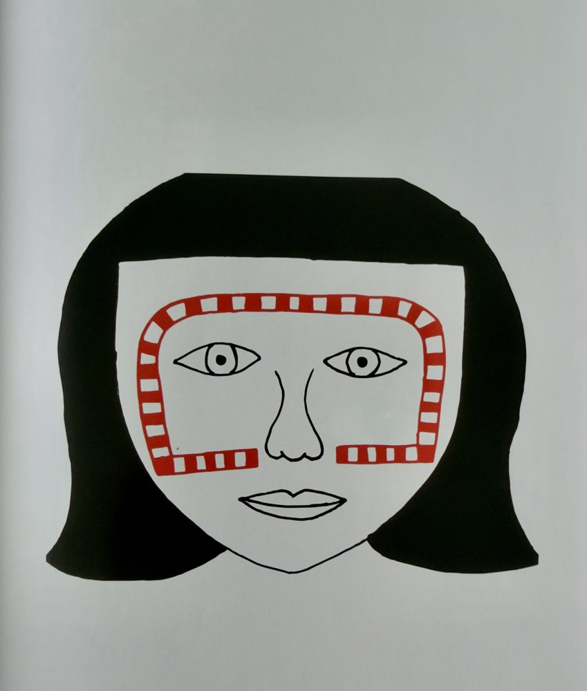
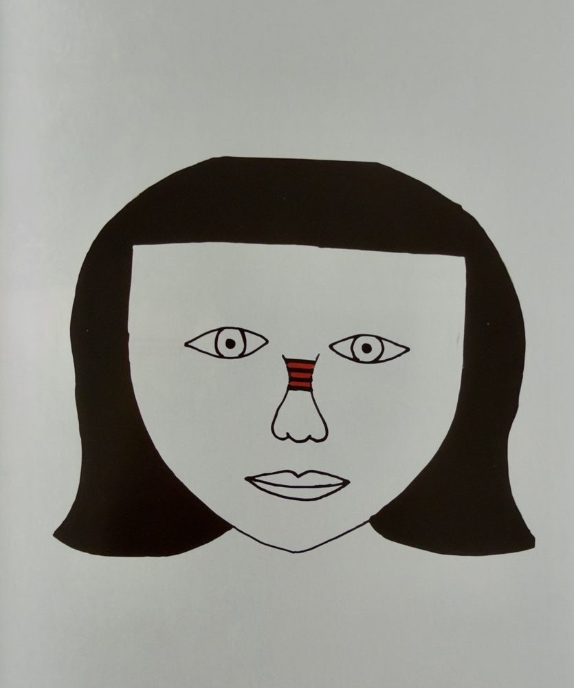
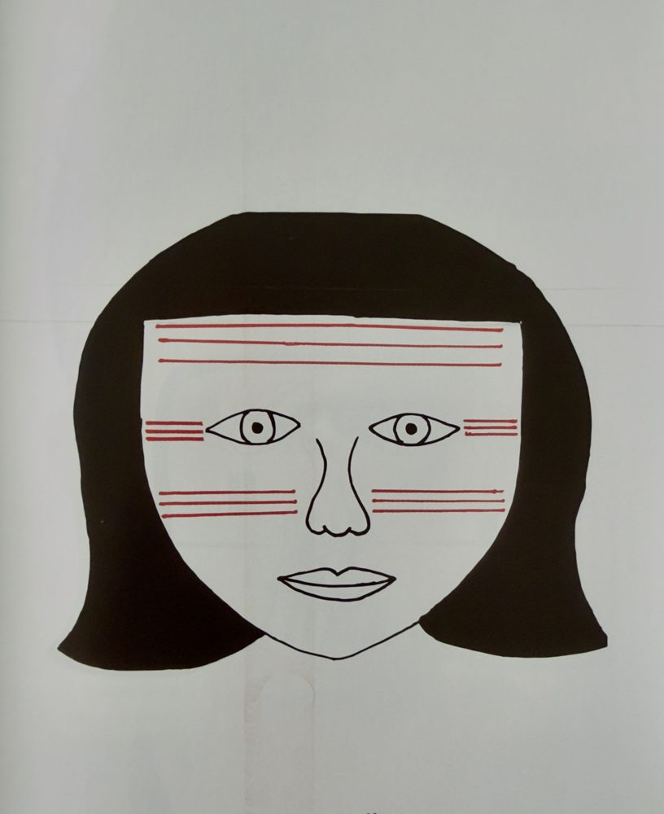
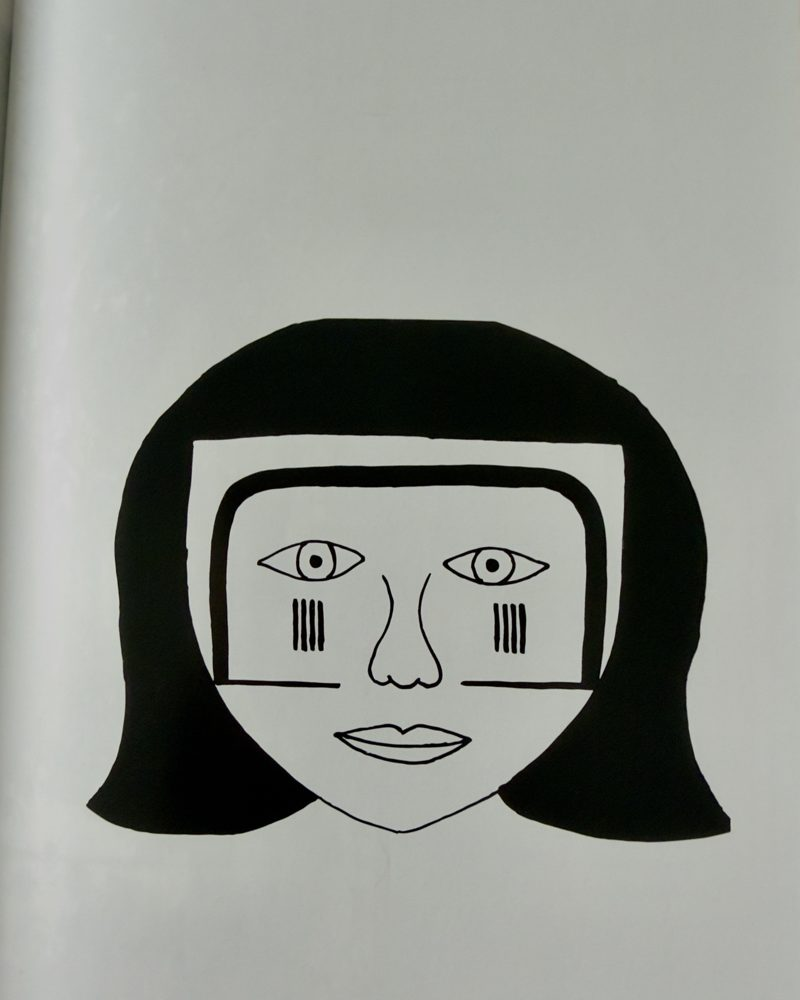
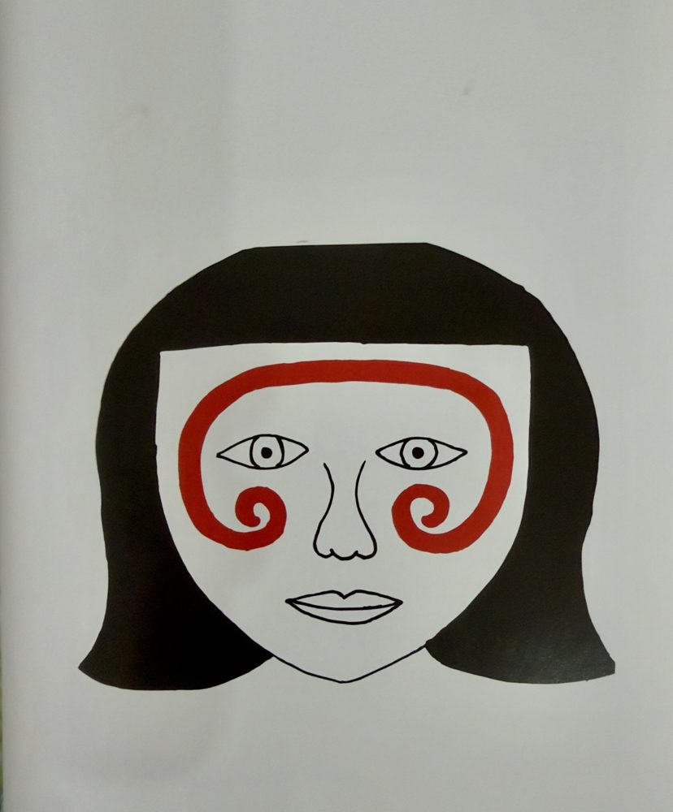
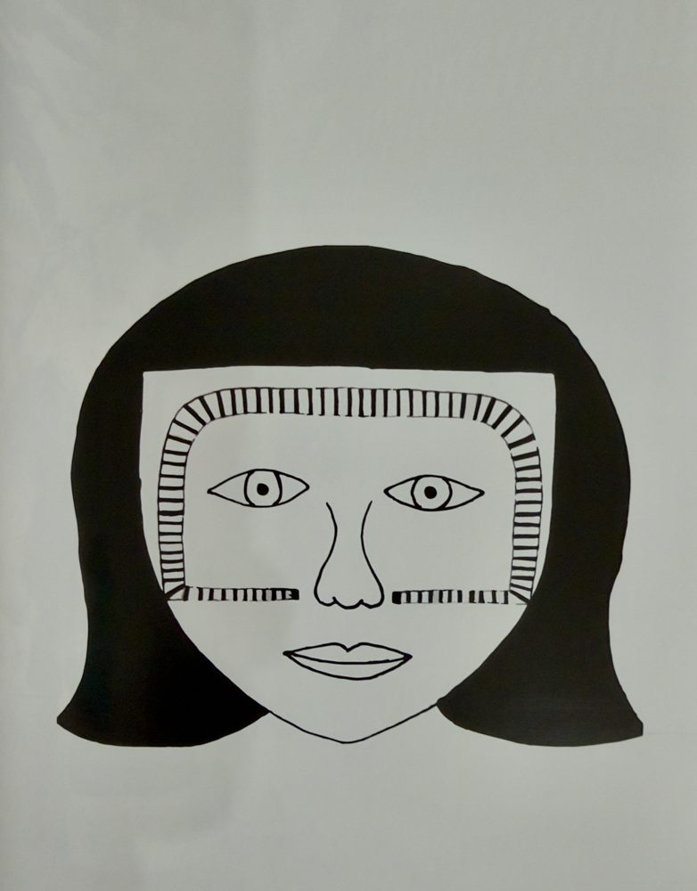
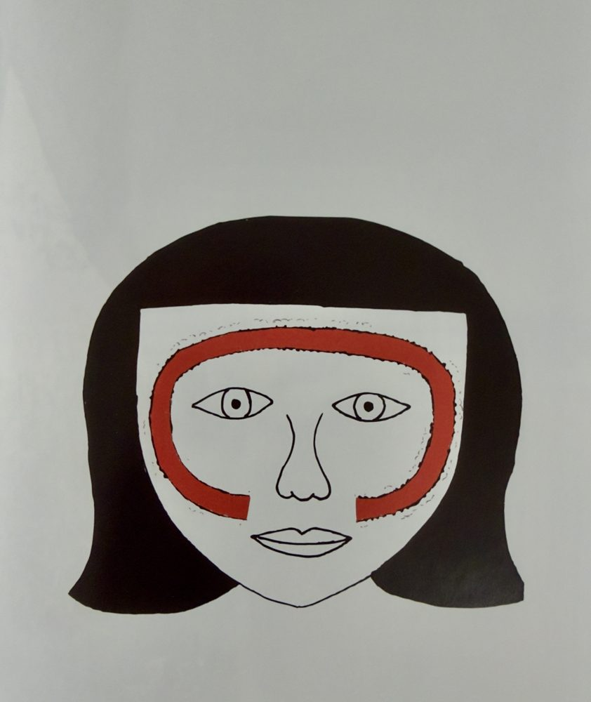

Encyclopedia
Pinturas faciais: Paiwoe
Pinturas faciais (boe ejiwu) do clã Paiwoe, metade Tugarege: 14 registros.
Pinturas faciais do clã Paiwoe, metade Tugarege. Descrições marcadas como pendentes foram omitidas; os dados aguardam validação pela comunidade.
- Paiwoe Ekujago — Representa o bugio.
- Kugo Jokuria — Representa linhas ao redor do olho do gavião kugo.
- Kidoguro Kurirewu
- Kidoguro Kurirewu 2
- Jerigigi Bo Corewu — Representa o casco do jabuti.
- Jerigigi Bo Kujagurewu — Representa o casco do jabuti.
- Turubare Imo — Representa o bico do pato selvagem.
- Cibaio Bakororo
- Kuido Jokuria — Representa o olho da arara-canindé.
- Pai O Corewu — Representa o rabo do bugio.
- Pai O Kujagurewu — Representa o rabo do bugio.
- Piabo Oiaga Atugo — Representa o rabo do curucuí.
- Botori Atugo Kujagurewu
- Botori Atugo Corewu
Pictures
 Kugo Jokuria. Photo: Boe Ejerare (LanguageStructure/boe-ejerare)
Kugo Jokuria. Photo: Boe Ejerare (LanguageStructure/boe-ejerare) Kidoguro Kurirewu. Photo: Boe Ejerare (LanguageStructure/boe-ejerare)
Kidoguro Kurirewu. Photo: Boe Ejerare (LanguageStructure/boe-ejerare)
Kidoguro Kurirewu 2. Photo: Boe Ejerare (LanguageStructure/boe-ejerare)
Jerigigi Bo Corewu. Photo: Boe Ejerare (LanguageStructure/boe-ejerare)
Jerigigi Bo Kujagurewu. Photo: Boe Ejerare (LanguageStructure/boe-ejerare)
Turubare Imo. Photo: Boe Ejerare (LanguageStructure/boe-ejerare)
Cibaio Bakororo. Photo: Boe Ejerare (LanguageStructure/boe-ejerare)
Kuido Jokuria. Photo: Boe Ejerare (LanguageStructure/boe-ejerare) Pai O Corewu. Photo: Boe Ejerare (LanguageStructure/boe-ejerare)
Pai O Corewu. Photo: Boe Ejerare (LanguageStructure/boe-ejerare)
Pai O Kujagurewu. Photo: Boe Ejerare (LanguageStructure/boe-ejerare)
Piabo Oiaga Atugo. Photo: Boe Ejerare (LanguageStructure/boe-ejerare)
Botori Atugo Kujagurewu. Photo: Boe Ejerare (LanguageStructure/boe-ejerare) Botori Atugo Corewu. Photo: Boe Ejerare (LanguageStructure/boe-ejerare)
Botori Atugo Corewu. Photo: Boe Ejerare (LanguageStructure/boe-ejerare)
How to cite
Pinturas faciais: Paiwoe. In: Boe Eno Moto, Encyclopedia (2026-10-09). https://boeenomoto.terradoc.org/en/encyclopedia/pinturas-paiwoe.html
Updated 2026-10-09